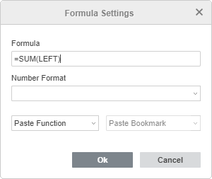

Korišćenje formula u tabelama
Ubacivanje formule
U Document Editor-u možete izvršavati jednostavne proračune nad podacima u ćelijama tabele dodavanjem formula. Da biste ubacili formulu u ćeliju tabele:
- postavite kursor u ćeliju u kojoj želite da se prikaže rezultat,
- kliknite na dugme Dodaj formulu u desnom panelu,
- u otvorenom prozoru Podešavanja formule, unesite potrebnu formulu u polje Formula.
Formulu možete uneti ručno koristeći uobičajene matematičke operatore (+, -, *, /), npr. =A1*B2, ili koristiti padajuću listu Umetni funkciju da odaberete neku od ugrađenih funkcija, npr. =PRODUCT(A1,B2).

- ručno navedite potrebne argumente unutar zagrada u polju Formula. Ako funkcija zahteva više argumenata, oni moraju biti odvojeni zarezima.
- koristite padajuću listu Format broja ako želite da rezultat bude prikazan u određenom formatu broja,
- kliknite OK.
Rezultat će biti prikazan u odabranoj ćeliji.
Da biste izmenili dodatnu formulu, odaberite rezultat u ćeliji i kliknite na dugme Dodaj formulu u desnom panelu, izvršite potrebne izmene u prozoru Podešavanja formule i kliknite OK.
Dodavanje referenci na ćelije
Možete koristiti sledeće argumente za brzo dodavanje referenci na opsege ćelija:
- GORE - referenca na sve ćelije u koloni iznad odabrane ćelije
- LEVO - referenca na sve ćelije u redu levo od odabrane ćelije
- DOLE - referenca na sve ćelije u koloni ispod odabrane ćelije
- DESNO - referenca na sve ćelije u redu desno od odabrane ćelije
Ovi argumenti se mogu koristiti sa funkcijama AVERAGE, COUNT, MAX, MIN, PRODUCT, SUM.
Možete takođe ručno uneti reference na određenu ćeliju (npr. A1) ili opseg ćelija (npr. A1:B3).
Korišćenje obeleživača
Ako ste dodali obeleživače u određene ćelije tabele, možete ih koristiti kao argumente pri unosu formula.
U prozoru Podešavanja formule, postavite kursor unutar zagrada u polju Formula gde želite da se doda argument i koristite padajuću listu Umetni obeleživač da odaberete jedan od prethodno dodatih obeleživača.
Ažuriranje rezultata formule
Ako promenite neke vrednosti u ćelijama tabele, potrebno je ručno ažurirati rezultate formula:
- Za ažuriranje jednog rezultata formule, odaberite potreban rezultat i pritisnite F9 ili kliknite desnim tasterom miša na rezultat i izaberite opciju Ažuriraj polje iz menija.
- Za ažuriranje više rezultata formula, odaberite potrebne ćelije ili celu tabelu i pritisnite F9.
Ugrađene funkcije
Možete koristiti sledeće standardne matematičke, statističke i logičke funkcije:
| Kategorija | Funkcija | Opis | Primer |
| Matematička | ABS(x) | Funkcija vraća apsolutnu vrednost broja. | =ABS(-10) Vraća 10 |
| Logička | AND(logical1, logical2, ...) | Funkcija proverava da li je logička vrednost TRUE ili FALSE. Vraća 1 (TRUE) ako su svi argumenti TRUE. | =AND(1>0,1>3) Vraća 0 |
| Statistička | AVERAGE(argument-list) | Funkcija računa prosečnu vrednost iz opsega podataka. | =AVERAGE(4,10) Vraća 7 |
| Statistička | COUNT(argument-list) | Funkcija broji broj odabranih ćelija koje sadrže brojeve, ignorišući prazne ćelije ili ćelije sa tekstom. | =COUNT(A1:B3) Vraća 6 |
| Logička | DEFINED() | Funkcija proverava da li je vrednost u ćeliji definisana. Vraća 1 ako je definisana i izračunata bez greške, inače vraća 0. | =DEFINED(A1) |
| Logička | FALSE() | Funkcija vraća 0 (FALSE) i ne zahteva argument. | =FALSE Vraća 0 |
| Logička | IF(logical_test, value_if_true, value_if_false) | Funkcija proverava logički izraz i vraća jednu vrednost ako je TRUE, a drugu ako je FALSE. | =IF(3>1,1,0) Vraća 1 |
| Matematička | INT(x) | Funkcija vraća celobrojni deo zadatog broja. | =INT(2.5) Vraća 2 |
| Statistička | MAX(number1, number2, ...) | Funkcija pronalazi najveći broj u opsegu podataka. | =MAX(15,18,6) Vraća 18 |
| Statistička | MIN(number1, number2, ...) | Funkcija pronalazi najmanji broj u opsegu podataka. | =MIN(15,18,6) Vraća 6 |
| Matematička | MOD(x, y) | Funkcija vraća ostatak pri deljenju broja sa zadatim deliocem. | =MOD(6,3) Vraća 0 |
| Logička | NOT(logical) | Funkcija proverava da li je logička vrednost FALSE. Vraća 1 (TRUE) ako je argument FALSE, inače vraća 0 (FALSE). | =NOT(2<5) Vraća 0 |
| Logička | OR(logical1, logical2, ...) | Funkcija proverava da li je logička vrednost TRUE ili FALSE. Vraća 0 (FALSE) ako su svi argumenti FALSE. | =OR(1>0,1>3) Vraća 1 |
| Matematička | PRODUCT(argument-list) | Funkcija množi sve brojeve u odabranom opsegu ćelija i vraća proizvod. | =PRODUCT(2,5) Vraća 10 |
| Matematička | ROUND(x, num_digits) | Funkcija zaokružuje broj na željeni broj decimala. | =ROUND(2.25,1) Vraća 2.3 |
| Matematička | SIGN(x) | Funkcija vraća znak broja. Ako je broj pozitivan, vraća 1. Ako je negativan, vraća -1. Ako je 0, vraća 0. | =SIGN(-12) Vraća -1 |
| Matematička | SUM(argument-list) | Funkcija sabira sve brojeve u odabranom opsegu ćelija i vraća rezultat. | =SUM(5,3,2) Vraća 10 |
| Logička | TRUE() | Funkcija vraća 1 (TRUE) i ne zahteva argument. | =TRUE Vraća 1 |